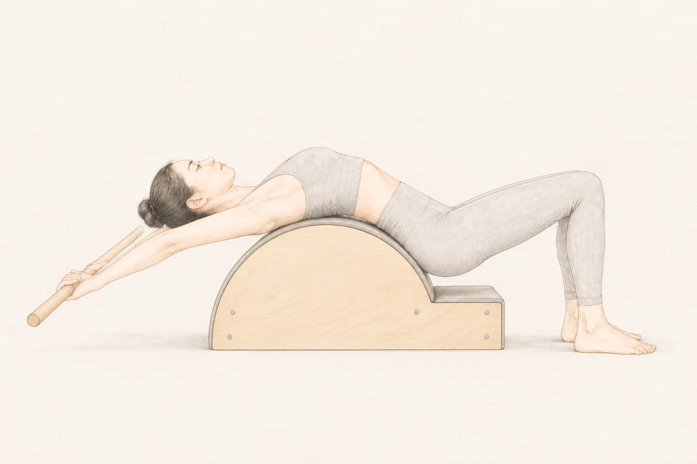
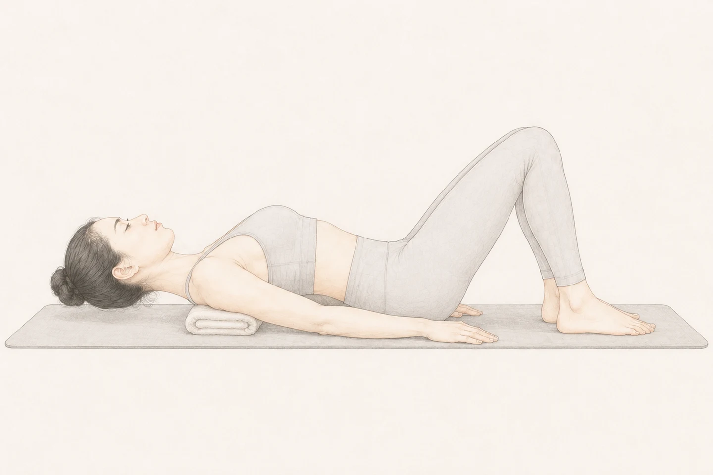
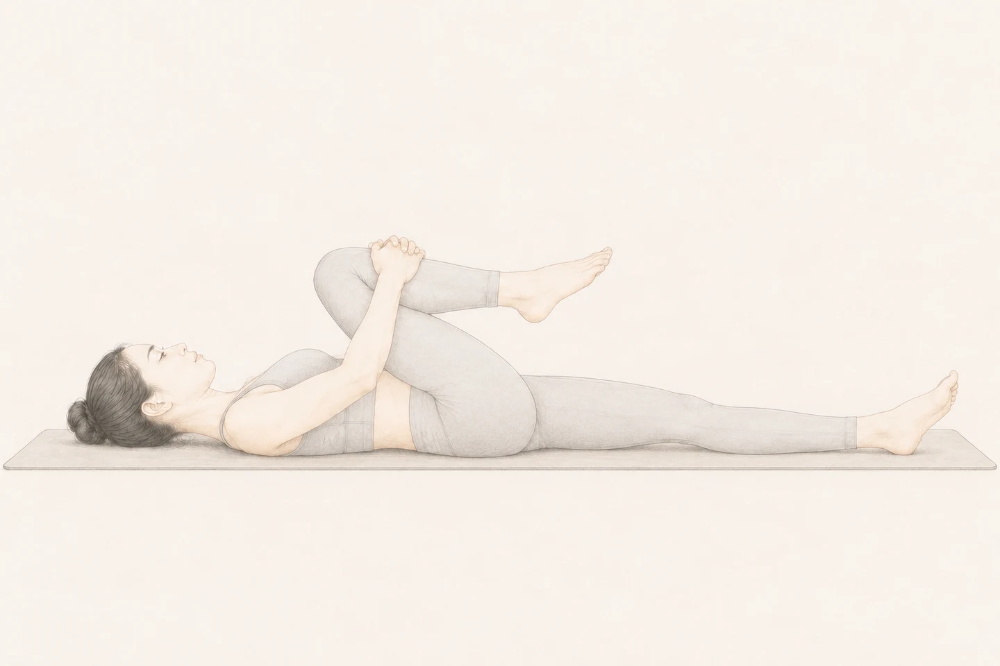

一、越用力越僵，未必是力量不够
下班去上课。老师说收核心、稳住、肩膀别耸。你照做，越用力越僵：Hundred 泵到一半，胸口往前扣、脖子先酸；抬腿的时候，大腿根前面先累，肚子反而找不到。
多数人给自己下的结论是同一个：力量不够，回家加练核心。
可练不上力，至少是两件不同的事。没打开：那个位置你根本到不了，胸口一直关着，髋前侧一直折着。撑不住：位置你到得了，被托着能到，一撤掉支撑就掉回去。两种看起来都是「做不好」，处方却是反的。力量真的不够当然也有，只是它排在后面：位置到得了、也保得住，还差，才轮到它。
我的观察是，打工人多半先卡在第一种。髋前侧在工位上折了八个小时，胸椎在电脑前圆了八个小时，所谓「核心没力」，很多时候是该打开的地方还关着，身体只能用别的地方去凑。
二、关着的形状，越练越熟
Kathi Ross-Nash 给学员排课，遇到一个人胸前关着、骨盆也不稳，她的顺序是先开，后稳。她的原话：
"I really don't want to work something that's closed, because then I'm honing and I'm strengthening it in that alignment that I really don't want."
一个关着的东西，她不去练它。在那个位置上练，等于把她不想要的形状练得更熟、更有力。
之前写三种紧的时候，我说过「打开身体」这类话在行业里只多不少，却说不出怎么验证。她的打开有一个很硬的验收：开完，回到原来那个动作，看它变没变。胸口还往前卷吗，锁骨开了没有，呼吸是不是变深了。没回到原动作验过的打开，只是一段舒服的时间。
这也是它和瑜伽课上说的开胸、开髋不太一样的地方。瑜伽里的打开，常常停在一个体式里往末端多送一点，开到多远本身就是目标；这里的打开是给下一个动作用的，开得再远，一回到 Hundred 胸口照样往前扣，就还没打开。拉一侧总比什么都没拉到好，只是拉完，很少有人回头问一句：原来那个动作，变了没有。
三、课上的开场，常常从第二步起手
我上过的私教课，开场都在找连接，不在打开。多半是这一串：先躺下呼吸，然后骨盆时钟，死虫，手臂上抬下放，老师在旁边说，找找连接感。我上过的团课更简单，几轮脊柱流动，流没流动起来，看你自己的水平。
这一串我不反对。它们都在做同一件事：在躺着的身体上找稳、找连接。放进 Kathi 处理关着的身体那个顺序里看，它们是第二步。少的是先看一眼身体关没关。身体是带着一整天的形状躺下来的，胸口关着，髋前折着，连接感就在这个形状里找。找到了，也是在那个形状里找到的。
也有课补了这一步，用的是松解：上来先给你松胸小肌，松髋前侧。这是在开，开的是一块肌肉。松完当下是松的，可回到 Hundred，胸口往不往前扣，我上过的课里没人回头看。Kathi 在脊柱矫正器上给学员调支撑的时候说过一句话，我觉得放在这里也成立：「我不想让它舒服，舒服不会带来改变。大家到处塞枕头，然后谁的身体都没变。」
她的课是反过来起手的。第一个动作不当热身，当一把尺子：学员做一遍标准的 Hundred，她看的是骨盆稳不稳，胸前开没开，髋前侧有没有一道褶，不同的身体露出的是不同的一处。看到关着的，先去开。开完回到 Hundred 再量一次。量到开度有了、保不住，才去找稳、找力量。同一节课里另一个学员，上身越伸越往前，她的判断是：「她现在有开度了，我们刚才都看到了，但她还没有撑住它的力量。」这时才去稳踏椅。之前写稳踏椅的时候说过，力量要加在已经有的长度上。每换一台器械，都回这把尺子量一次，不等到最后。
写成一行：量，开，再量，再稳，最后加力。
团课上没有老师的眼睛，这把尺子可以自己拿。流动之前做一遍某个动作，流动之后再做一遍。变了，这几轮流动就算数；没变，下次换一种开法。
四、打开要的是托：有脊柱矫正器，和没有的时候
那个胸口关着的学员，她用来打开的是脊柱矫正器（Spine Corrector），带台阶的那只弧形器械。学员把肩胛骨放在弧顶，手握一根杆，往后画手臂的弧。她为什么选它，而不选更小的那只 Baby Barrel？她的理由是角度没那么深，托得更多。很多人以为小的更简单，其实反过来：托得越多，越容易先开出来。
我家里有一台古典的 Spine Corrector。第一次躺上去，坡度高，头朝下还会充血；现在头不胀了，整个背能长长地贴在弧面上，有一种稳稳的反馈，后腰也变长了，以前做不到的倒置滚动现在能做。这一路的变化，是我在它上面一次次躺出来的。很多人手里的是更轻便的 ARC，之前那篇写过，轻便版赢在方便，被换掉的是古典那台的稳定基准。做打开的时候，你要的正是那个基准：背贴不贴得上，是它先告诉你。
没有脊柱矫正器的时候，打开也有路。Sonjé Mayo 带胸口关着、脖子往前探的人，是把支撑垫在肩胛骨下方，膝盖弯着躺下。她不把它当一个动作，整堂课都垫着练，Hundred 也在上面做。她的原话：
"Notice I haven't taken this one out. Because if I take it out, they're going to go back to that. So I keep it in all the time."
一拿走，身体就回到原来那个形状，所以不拿走。在家，她说瑜伽砖或者折起来的毛巾就能替。她的打开和 Kathi 的不是同一种：Kathi 把打开当第一步，开完回原动作验；Sonjé 是借支撑把身体先放到开着的位置，整堂课在那个位置里练。她自己说得很清楚，垫着是被动的，最后总得变成主动的。做法不同，守的是同一句话：不在关着的形状上加力。
我上的现代课还有一对打开的动作：上身做 Swan，下身做 Shoulder Bridge。位置对，胸椎和髋前侧。它们的托在手和脚上：Swan 靠两只手推地、耻骨压住垫子，Bridge 靠两只脚和落住的肋骨。弧面托着整个背，腰没法替胸椎去弯；手和脚托不住这么多，我练下来的体会是，手一松、肋骨一翻，开的就不是胸椎，是腰。关着的身体会把「开」送到最容易动的那一节，这两个动作当打开用，得有老师盯着托的位置。Sonjé 带胸口关着的人，伸展是往后放的，先做趴着抬肋骨的 Flight，我的理解是 Swan 也在往后放的那一类里。
所以打开有三档，看你手里有什么。有脊柱矫正器：托在弧面里，错的路被堵死。有老师：Swan 和 Bridge 可以用，眼睛是老师的。都没有：毛巾卷垫着练，盯的人换成你自己，开完回原动作验那一下。


五、在家怎么分，先做哪一步
手臂过头：先躺下，屈膝，两只手臂慢慢往头顶后方放。再站起来，背靠墙，做同一个动作。躺着都到不了、下面的肋骨翻起来，多半是没打开；躺着到得了、一站起来就翻肋，多半是撑不住。
抬腿：躺下，一条腿抱向胸口，另一条腿伸直放在垫子上。伸直那条腿落不到垫子上，是髋前侧没打开；能落下去，一松开抱着的腿骨盆就跟着跑，是撑不住。

两个分辨给的是线索，有人两遍一样，有人两处都在变，那就先按没打开做一轮，再回来验。它们是告诉你先做哪一步。下次练不上力，先别急着加重量，先问一句：这个位置，我到得了吗？
如果你带课，开场那一个动作，让它当尺子，别只当热身。一轮下来，回到它看一眼。
先打开，再撑住，最后才加力。